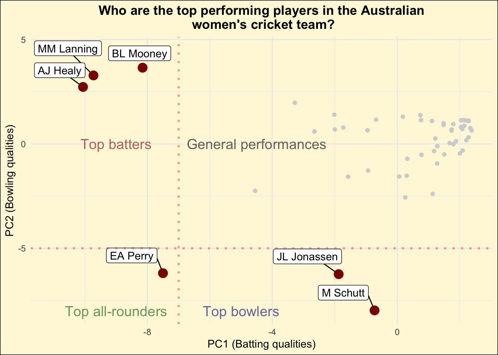

1 Introduction
Principal Component Analysis (PCA) is a statistical technique used to simplify complex datasets by reducing their dimensionality while retaining most of the original variability. It is widely used in data analysis and machine learning for feature extraction, data visualization, and noise reduction.
In the current exercise, we will analyse the performance of the Australian women’s cricket team players. The dataset contains a total of 19 variables, making our analysis a high-dimensional one and complicated to obtain insights from.
Through the utilisation of PCA, we will reduce the total number of variables to just 2, and yet keeping as much information as possible within the entire dataset. This provides us with the benefit of being able to obtain insights through traditional 2-D plots.
2 Biplot generation for PC1 and PC2
After successfully performing PCA, let us plot the results and try to understand what could PC1 and PC2 exactly mean.
Figure 1 illustrates the biplot distribution for the first two PCs of the data.
Key takeaway
Based on Figure 1, some of the key observations are as follows:
We can observe that there are variables such as “wickets”,“four wickets” and “five wickets” which are pointing in the vertically downward direction and are also nearly parallel to one another. This indicates that these set of variables influence the PC2 variable strongly and are highly correlated to one another.
On the other hand, variables such as “Innings”,“Not outs”, “Strike rate”,“Sixes”,“Ducks”,“High score”,“Balls faced”,“Hundreds”,“Fifties etc, points towards approximately in the orthogonal direction to the set of variables mentioned in the previous bullet point. This means that these set of variables contribute towards the PC1 variable and are also correlated as they are observed to be pointing generally in a similar direction.
3 Interpretation of the PCs
The biplot which has been illustrated through Figure 1 allows us to understand the magnitude of contribution through the length of the loading vectors and the correlation among the variables by observing the angle made by each of the loading vectors to one another. Upon closely examining these loading vectors, we can obtain a few key interpretations of the PCs listed below.
Key takeaway
Based on the understanding of the cricketing terminologies, it can be inferred that PC2 is heavily influenced by the variables that relate to bowling in a game of cricket.
On the other hand, PC1 is primarily influenced by variables which relate to batting in the game.
There are variables such as “Start”,“Economy” and “Average” whose loading vector lengths are considerably smaller than the other variables. This indicates that the effect of these variables on the respective PC is much lower than some of the other variables mentioned in the plot.
There also appears to be lower correlation among each variable in the direction of PC1 as the loading directions of the variables (shown by the red arrows) are much more spread out than the case for variables in the PC2 direction. This additionally reinforces the fact that PC1 accounts for majority of the variance in the data (nearly 45 %).
4 Key takeaways observed during PCA

Key takeaway
The distribution of data points as observed in the illustration Figure 2 provides us with an understanding of the abilities of each player. Some of the key observations from the plot are as follows:
Majority of the data points cluster towards the top right of the plot, indicating the general abilities of the players lie in this region. Based on this, we can conclude that the PC1 and PC2 attributes of most players would lie close to the origin point (0,0).
However, when observing the players on the X-axis (along the PC1 axis), we can observe that there are about three players to the left of the red line. These players are namely BL Mooney, MM Lanning and AJ Healy. As already explained in Section 4, a higher magnitude of value in PC1 relates to batting attributes. Based on the PC1 magnitude and the loading vectors of these players, this indicates that these players would generally feature as the top batters in the team.
When observing the players on the Y-axis (along the PC2 axis) and particularly at the points below the threshold red line, we observe the players M Schutt and JL Jonassen have a high PC2 magnitude while the PC1 magnitude is much lower in comparison. As discussed in Section 4, PC2 is heavily influenced by variables which are related to bowling. This indicates that M Schutt’s and JL Jonassen’s attributes would most likely make them some of the top bowlers in the team.
There are however players who may have balanced attributes, indicating they’re equally able to contribute to batting and bowling in a match. These players are generally termed as “All-rounders”. While looking at the data, we can clearly point out the player EA Perry who has a high PC1 and a PC2 score. This indicates that she is expected to be the top most all-rounder in the Australian Women’s Cricket team.
5 References
tourr: Hadley Wickham, Dianne Cook, Heike Hofmann, Andreas Buja (2011). tourr: An R Package for Exploring Multivariate Data with Projections. Journal of Statistical Software, 40(2), 1-18. URL http://www.jstatsoft.org/v40/i02/.
tidymodels: Kuhn et al., (2020). Tidymodels: a collection of packages for modeling and machine learning using tidyverse principles. https://www.tidymodels.org.
tidyverse: Wickham H, Averick M, Bryan J, Chang W, McGowan LD, François R, Grolemund G, Hayes A, Henry L, Hester J, Kuhn M, Pedersen TL, Miller E, Bache SM, Müller K, Ooms J, Robinson D, Seidel DP, Spinu V, Takahashi K, Vaughan D, Wilke C, Woo K, Yutani H (2019). “Welcome to the tidyverse.” Journal of Open Source Software, 4(43), 1686. doi:10.21105/joss.01686 https://doi.org/10.21105/joss.01686.
kableExtra: Zhu H (2024). kableExtra: Construct Complex Table with ‘kable’ and Pipe Syntax. R package version 1.4.0, https://CRAN.R-project.org/package=kableExtra.
caret: Kuhn, M. (2008). Building Predictive Models in R Using the caret Package. Journal of Statistical Software, 28(5), 1–26. https://doi.org/10.18637/jss.v028.i05.
plotROC: Michael C. Sachs (2017). plotROC: A Tool for Plotting ROC Curves. Journal of Statistical Software, Code Snippets, 79(2), 1-19. doi:10.18637/jss.v079.c02.
mulgar: Cook D, Laa U (2023). mulgar: Functions for Pre-Processing Data for Multivariate Data Visualisation using Tours. R package version 1.0.2, https://CRAN.R-project.org/package=mulgar.
uwot: Melville J (2023). uwot: The Uniform Manifold Approximation and Projection (UMAP) Method for Dimensionality Reduction. R package version 0.1.16, https://CRAN.R-project.org/package=uwot.
GGally: Schloerke B, Cook D, Larmarange J, Briatte F, Marbach M, Thoen E, Elberg A, Crowley J (2024). GGally: Extension to ‘ggplot2’. R package version 2.2.1, https://CRAN.R-project.org/package=GGally.
animation: Yihui Xie (2013). animation: An R Package for Creating Animations and Demonstrating Statistical Methods. Journal of Statistical Software, 53(1), 1-27. URL https://doi.org/10.18637/jss.v053.i01.
magick: Ooms J (2024). magick: Advanced Graphics and Image-Processing in R. R package version 2.8.3, https://CRAN.R-project.org/package=magick.
plotly: C. Sievert. Interactive Web-Based Data Visualization with R, plotly, and shiny. Chapman and Hall/CRC Florida, 2020.
ggfortify: Yuan Tang, Masaaki Horikoshi, and Wenxuan Li. “ggfortify: Unified Interface to Visualize Statistical Result of Popular R Packages.” The R Journal 8.2 (2016): 478-489.
OpenAI (2023). ChatGPT (version 3.5) [Large language model]. https://chat.openai.com/chat, full script of conversation here